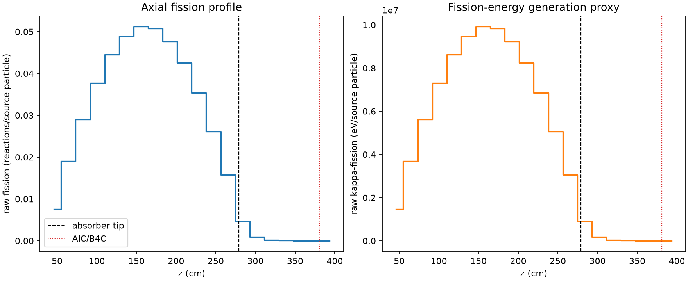
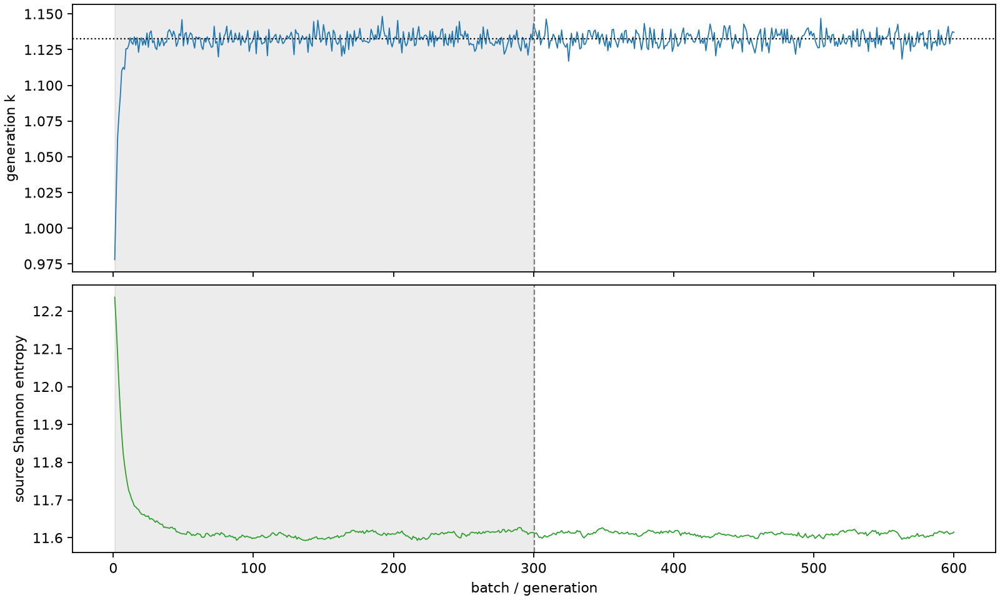

| field | value |
|---|---|
| experiment | V2-STAGE_128_OGRENCI_03-0022 |
| k | 1.1325864991244647 |
| MC standard error | 0.00018918746729553013 |
| seconds | 984.5869553669982 |
| acceptance | not_assessed |
| convergence | review_required |
Completed is output integrity only; physical and statistical review required. Zero tallies do not prove zero production or zero uncertainty.
| diagnostic | value |
|---|---|
| geometric fuel voxels | 5280 |
| zero fission tally voxels | 90 |
| low signal fuel voxels | 951 |
| low signal fission share | 9.081176589184873e-05 |
| low signal kappa share | 9.084929493638853e-05 |
| important fission share | 0.9500157136514903 |
| previous filter included | 4329 |
| duration estimate s | 1562.5173488400023 |
| actual minus estimate s | -577.9303934730042 |
| fission relative MC error | statistics |
|---|---|
| all_geometric_fuel | {"voxels": 5280, "positive_mean_voxels": 5190, "zero_mean_voxels": 90, "undefined_relative_error_voxels": 90, "median": 0.010687018869022034, "p95": 0.6993065164964619, "maximum": 1.0000000000000002} |
| low_signal | {"voxels": 951, "positive_mean_voxels": 861, "zero_mean_voxels": 90, "undefined_relative_error_voxels": 90, "median": 0.507051104046681, "p95": 1.0, "maximum": 1.0000000000000002} |
| important_95pct | {"voxels": 3003, "positive_mean_voxels": 3003, "zero_mean_voxels": 0, "undefined_relative_error_voxels": 0, "median": 0.00797356850444936, "p95": 0.01208325567066261, "maximum": 0.014559728566250504} |
| outside_previous_filter | {"voxels": 951, "positive_mean_voxels": 861, "zero_mean_voxels": 90, "undefined_relative_error_voxels": 90, "median": 0.507051104046681, "p95": 1.0, "maximum": 1.0000000000000002} |
| kappa_fission relative MC error | statistics |
|---|---|
| all_geometric_fuel | {"voxels": 5280, "positive_mean_voxels": 5190, "zero_mean_voxels": 90, "undefined_relative_error_voxels": 90, "median": 0.010675497271927592, "p95": 0.69745796451307, "maximum": 1.0000000000000002} |
| low_signal | {"voxels": 951, "positive_mean_voxels": 861, "zero_mean_voxels": 90, "undefined_relative_error_voxels": 90, "median": 0.5062093839414021, "p95": 1.0, "maximum": 1.0000000000000002} |
| important_95pct | {"voxels": 3003, "positive_mean_voxels": 3003, "zero_mean_voxels": 0, "undefined_relative_error_voxels": 0, "median": 0.007964057826802226, "p95": 0.012070143410667067, "maximum": 0.014541240567461828} |
| outside_previous_filter | {"voxels": 951, "positive_mean_voxels": 861, "zero_mean_voxels": 90, "undefined_relative_error_voxels": 90, "median": 0.5062093839414021, "p95": 1.0, "maximum": 1.0000000000000002} |
| axial bin | fission share | kappa-fission share |
|---|---|---|
| 1 | 0.01633672378860269 | 0.016337498939641724 |
| 2 | 0.04111569238764771 | 0.041115539232021096 |
| 3 | 0.062813455499532 | 0.06281312000743271 |
| 4 | 0.08154923030543537 | 0.08154885969958349 |
| 5 | 0.0962722033825461 | 0.09627191379588666 |
| 6 | 0.1058783304359702 | 0.10587775775930204 |
| 7 | 0.11079661462803837 | 0.11079601287526271 |
| 8 | 0.10989284082894836 | 0.10989258300300127 |
| 9 | 0.10325896136201258 | 0.10325845085125869 |
| 10 | 0.09212103545143023 | 0.0921206089697879 |
| 11 | 0.07659101450382749 | 0.07659077923083804 |
| 12 | 0.05654573030052564 | 0.0565456539934833 |
| 13 | 0.03407011879493626 | 0.034070077982380355 |
| 14 | 0.010158756748000949 | 0.010160797357012967 |
| 15 | 0.0020001373459222972 | 0.0020009392197216005 |
| 16 | 0.0004677940282091619 | 0.000467985598209894 |
| 17 | 0.00010089319430100471 | 0.0001009449083511802 |
| 18 | 2.3921218757389336e-05 | 2.3930221816637398e-05 |
| 19 | 5.806624582452269e-06 | 5.806777673711866e-06 |
| 20 | 7.391707737231961e-07 | 7.395773339470806e-07 |
Histories include the inactive-to-active transition at batch 300. kappa-fission approximates fission energy production, not total heat deposition.

